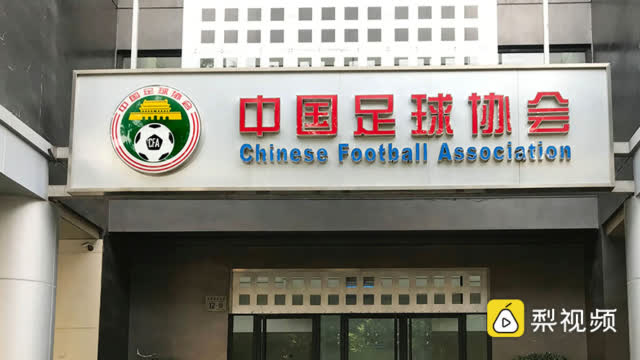

我想，这是二十年内打进世界杯的唯一方法了：把大量有天赋的孩子送出去。就像梅西被送到拉玛西亚。在国内踢，完全不可能了。
@网易财经:
【#足协称要学习日本# ：日本联赛收入比我们低，大量球员留洋成长 】中国足协表态将向日本学习，会在政策上鼓励优秀的年轻球员留洋闯荡。中国足协执委戴晓微称，日本的职业联赛球员的收入水平比我们低，而且要低不少。大量年轻球员、优秀球员都是到海外高水平联赛效力，从而得到成长。足协将与欧足联合作，支持中国球员留洋。
】中国足协表态将向日本学习，会在政策上鼓励优秀的年轻球员留洋闯荡。中国足协执委戴晓微称，日本的职业联赛球员的收入水平比我们低，而且要低不少。大量年轻球员、优秀球员都是到海外高水平联赛效力，从而得到成长。足协将与欧足联合作，支持中国球员留洋。 @梨视频体育
@梨视频体育  梨视频体育的秒拍视频
梨视频体育的秒拍视频

148万次播放
01:31